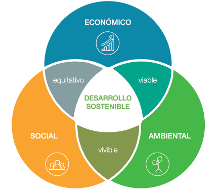
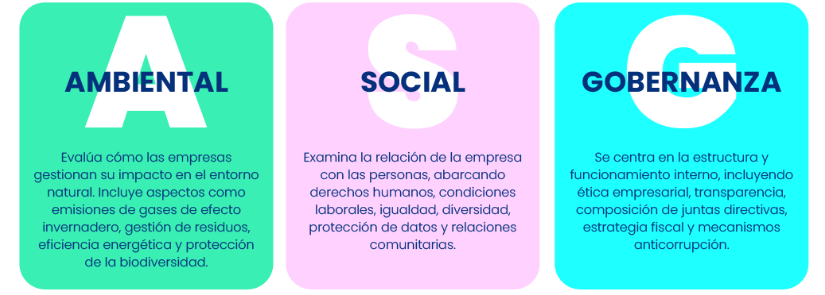
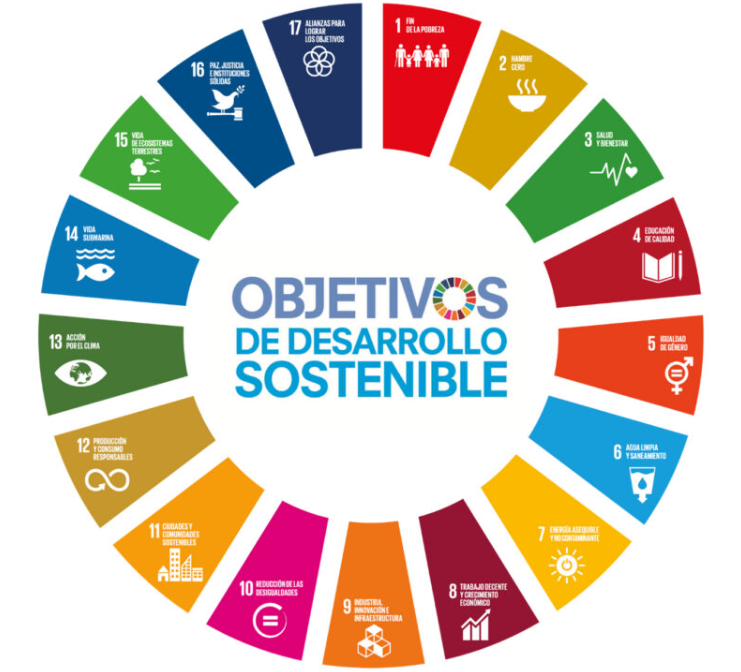

Sostenibilidad
El papel de la sostenibilidad en el sector tecnológico
La sostenibilidad trata de cuidar el medio ambiente y bienestar social. Debemos intentar cubrir nuestras necesidades de una manera equilibrada sin comprometer las futuras generaciones.
En el sector tecnológico la sostenibilidad tiene un papel muy importante, porque la tecnología puede ayudar a crear un mundo más eficiente y respetuoso con el entorno como reducir el consumo de energía, disminuir residuos electrónicos, servicios más duraderos, entre otros. Además aplicar la sostenibilidad a una empresa tecnológica mejora su innovación, eficiencia y reputación, ayudando a cumplir las normas ambientales, reduciendo costes operativos.
Las tres dimensiones de la sostenibilidad: ambiental, social y económica

La ambiental busca proteger el planeta mediante el uso responsable de los recursos y la reducción de la contaminación
La social se centra en mejorar la calidad de vida de las personas, garantizando igualdad, educación y buenas condiciones laborales.
Y por último la económica que intenta que las empresas sean rentables, pero siempre actuando de una manera responsable y respetuosa con el medio ambiente.
Estas tres dimensiones se reflejan en los aspectos ASG (ambientales, sociales y de gobernanza) que permite evaluar el impácto de una empresa en el medio ambiente(A), su relación con la sociedad(S) y empleados y la calidad de gestión corporativa(G).
Aspectos ASG: clave para una tecnología responsable

En el aspecto ambiental, se analiza si la empres reduce su consumo de energía, controla sus residuos y utiliza recursos de forma sostenible.
En el aspecto social, se valora como trata a sus trabajadores, si se promueve la igualdad, la formación y el bienestar.
En el aspecto de gobernanza se analiza cómo se dirige y organiza la empresa. Esto incluye transparencia (información clara), la ética (actuar de manera honesta y responsable) y el cumplimiento de las normas y leyes.
Para una empresa tecnológica, estos aspectos son muy importantes porque ayudan a que inversores o clientes ganen confianza y además mejora la reputación (gobernanza). Mediante un uso responsable de la energía y los recursos podemos cuidar el medio ambiente (ambiental). Y a través de buenas condiciones laborales e igualdad podemos favorecer el bienestar de los empleados y la sociedad (social).
También la tecnología puede servir como herramienta para impulsar la sostenibilidad, por ejemplo creando soluciones digitales que reduzcan el impacto ambiental.
Marcos inernacionales que impulsan la sostenibilidad
La Agenda 2030 que fue aprobada por todos los países miembros de la ONU con el objetivo de lograr un desarrollo sostenible para todas las personas y el planeta. Esta agenda se basa en 17 Objetivos de Desarrollo Sostenible (ODS) y 169 metas, cuyo fin es equilibrar el progreso económico, el bienestar social y la protección del medio ambiente
Para poder llevar a cabo esta agenda existen varios marcos internacionales: - La ONU, organismo principal. - El PNUD (Programa de las Naciones Unidas para el Desarrollo) que coordinan y apoyan las aplicaciones de los ODS. - El Pacto Mundial de la ONU, que promueve las prácticas sostenibles en las empresas. - El Acuerdo de París, centrado en la lucha contra el cambio climático. - La OCDE (Organización para la Cooperación y el Desarrollo Económicos) que fomenta políticas económicas y sociales sostenibles. - La Unión Europea que integra los ODS dentro de sus políticas y leyes, especialmente con el "Pacto Verde Europeo". - Organismo como la UNESCO, OMS o FAO apoyan la sostenibilidad desde áreas especifícas como la educación, salud, alimentación entre otras.
En resumen todos estos marcos trabajan en conjunto para el avance de un mundo más justo, equilibrado y respetuoso con nuestro planeta.
Los ODS relacionados con la informática y el desarrollo de software
La informátoca y el desarrollo del software son muy importantes para avanzar hacia los Objetivos de Desarrollo Sostenible (ODS).

Tres de los ODS más relacionados con la informática son: - ODS 4: Educación de calidad - ODS 8: Trabajo decente y crecimiento económico - ODS 9: Industria, innovación e infraestructura
| ODS | Relación con la tecnología y software | Ejemplos de aplicación |
|---|---|---|
| ODS 4: Educación de calidad |
Facilita el acceso a la educación a la educaión mediante herramientas digitales y plataformas online | - Clases virtuales - Aplicaciones educativas - La formación a distancia |
| ODS 8: Trabajo decente y creimiento económico | Genera nuevos puestos de trabajo en tecnología y ayuda a que las empresas trabajen de forma más rápida y eficiente gracias al uso de herramientas digitales | - Ofrece nuevos puestos de trabajos - Permite el teletrabajo |
| ODS 9: Industria, innovación e infraestructura | Impulsa la innovación y el desarrollo de infraestructuras digitales sostenibles | -Desarrollo de software - Inteligencia artificial - Redes inteligentes |